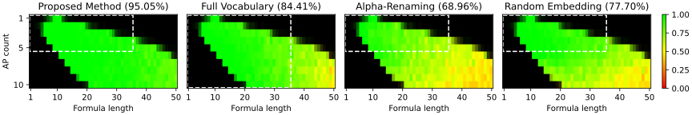
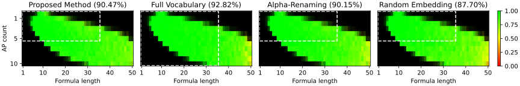

Current neural architectures lack a principled way to handle interchangeable tokens, i.e., symbols that are semantically equivalent yet distinguishable, such as bound variables. As a result, models trained on fixed vocabularies often struggle to generalize to unseen symbols, even when the underlying semantics remain unchanged. We propose a novel Transformer-based mechanism that is provably invariant to the renaming of interchangeable tokens. Our approach employs parallel embedding streams to isolate the contribution of each interchangeable token in the input, combined with an aggregated attention mechanism that enables structured information sharing across streams. Experimental results confirm the theoretical guarantees of our method and demonstrate substantial performance gains on open-vocabulary tasks that require generalization to novel symbols.
Neural networks are surprisingly fragile to how symbols are named: recent studies show that large language models' coding performance can drop by up to 70% under simple semantics-preserving edits such as variable renaming, revealing a reliance on surface-level naming patterns rather than underlying meaning. The root cause lies in standard embedding tables, which assign an independently learned representation to each token, baking name-dependent biases directly into the model. This issue cannot be patched away with more data or better prompts. it requires a novel architecture that is invariant to symbol renaming by construction, which also allows models to reliably generalize to new symbols that were never seen during training.
Our method maintains parallel embedding streams, one per interchangeable token, each treating its own token of interest as an actual symbol while masking every other interchangeable token as a placeholder.

(a) Propositional Logic

(b) LTL (Linear Temporal Logic)
Heatmaps visualizing prediction accuracy across varying atomic-proposition (variable) counts and formula lengths on an out-of-distribution test set. Brightness reflects sample density, with full brightness representing 100 samples, and the dashed white box marks the boundary of the training distribution.